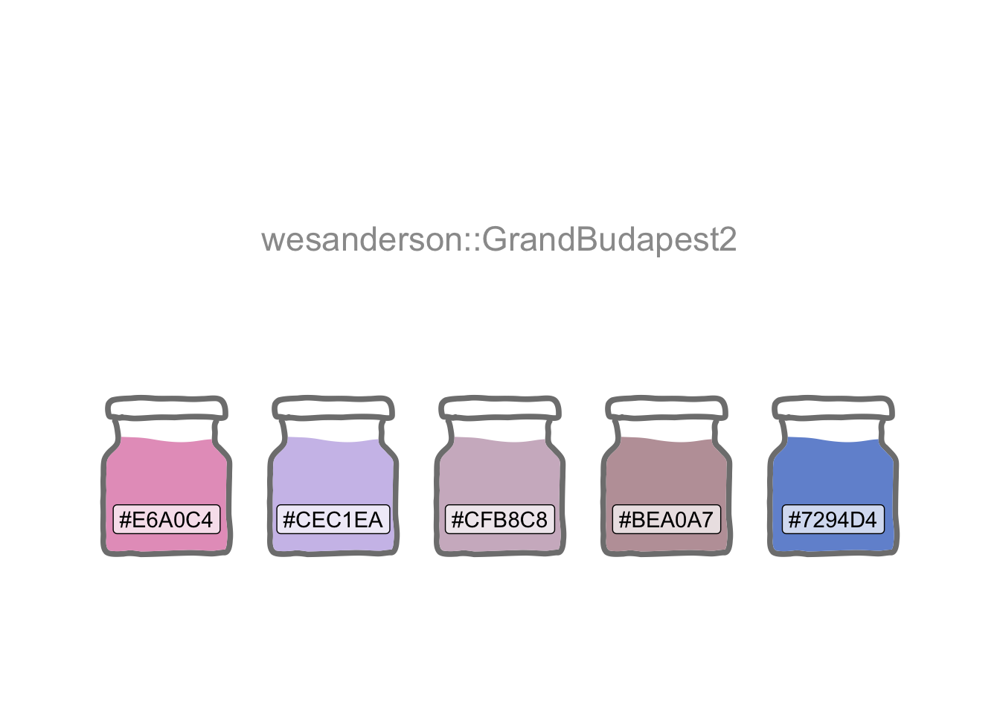

library(conflicted)
library(tidyverse)
conflict_prefer_all("dplyr")
library(tidymodels)
library(tsibble)
library(gganimate)
library(clock)
conflict_prefer("date_format", "clock")
library(unvotes)
library(patchwork)
library(wesanderson)
library(rvest)
library(glue)
library(usedthese)
conflict_scout()East-West Drift
R
dimension reduction
animation
Animated dimension reduction and East-West historical UN voting patterns

In Finding Happiness in ‘The Smoke’, dimension reduction and cluster analysis are used to see how different characteristics group London boroughs.
Dimension reduction is used here to visualise the grouping of UN members, for example five of the founding members, based on their General Assembly voting patterns. And by using animation, it’s possible to more easily see changes over time. Are they drifting closer or farther apart?
General Assembly votes are obtained from unvotes(Robinson 2021) and the visualisation animated using gganimate(Pedersen and Robinson 2022).
theme_set(theme_bw())
(cols <- wes_palette("GrandBudapest2"))
raw_df <- un_votes |>
inner_join(un_roll_calls, by = join_by(rcid)) |>
select(vote_date = date, everything()) |>
filter(country_code %in% c("GB", "CN", "US", "FR", "RU")) |>
mutate(
country = recode(
country_code,
GB = "UK",
CN = "China",
FR = "France",
RU = "Russia"
),
vote_date = date_parse(as.character(vote_date),
format = "%Y-%m-%d")
)
from <- raw_df |>
summarise(min(get_year(vote_date))) |>
pull()
to <- raw_df |>
summarise(max(get_year(vote_date))) |>
pull()Applying a sliding window to the roll-calls from 1946 to 2019 will make it possible to show the temporal changes.
tidy_df <- raw_df |>
arrange(vote_date, rcid) |>
nest(.by = c(vote_date, rcid)) |>
mutate(vote_id = row_number(), year = get_year(vote_date)) |>
unnest(data) |>
complete(country, nesting(vote_id)) |>
mutate(vote = replace_na(as.character(vote), "na"), value = 1) |>
group_by(vote_id) |>
fill(year, .direction = "updown") |>
mutate(variation = n_distinct(vote)) |>
ungroup() |>
filter(variation != 1) |>
select(country, vote_id, year, vote, value)
wdow_df <- tidy_df |>
as_tsibble(key = country, index = vote_id) |>
nest(.by = vote_id) |>
slide_tsibble(.size = 1000, .step = 250, .id = "slide_id") |>
unnest(data) |>
as_tibble() |>
arrange(slide_id, vote_id, country)Dimensionality reduction may be performed on each window. And the voting patterns are then visualised as a two-dimensional animation.
wdows <- wdow_df |>
summarise(max(slide_id)) |>
pull()
slide_pca <- \(x) {
wide_df <- wdow_df |>
filter(slide_id == x) |>
pivot_wider(
id_cols = c(country, slide_id),
names_from = c(vote_id, vote),
values_from = value,
values_fill = 0
)
pca_fit <- wide_df |>
select(-c(country, slide_id)) |>
prcomp(scale = TRUE) |>
augment(wide_df) |>
select(slide_id, country, .fittedPC1, .fittedPC2)
}
pca_windows <- map(1:wdows, slide_pca) |> list_rbind()
p <- pca_windows |>
mutate(east_west = if_else(country %in% c("China", "Russia"),
"East", "West")) |>
ggplot(aes(.fittedPC1, .fittedPC2)) +
geom_label(aes(label = country, fill = east_west)) +
scale_fill_manual(values = cols[c(1, 3)]) +
transition_time(slide_id) +
labs(
title = glue("P5 Distance for the Period {from} to {to}"),
subtitle = "Frame {frame} of {nframes}",
x = "Principal Component 1",
y = "Principal Component 2",
fill = NULL,
caption = "Source: unvotes"
) +
shadow_wake(wake_length = 0.1, wrap = FALSE)
animate(p, fps = 5, end_pause = 10)
France and the UK, for example, have remained particularly close given their historical ties and geographical proximity.
The UN’s Security Council Veto List provides further insights on the changing profile of P5 voting over the decades.
url <- "https://www.un.org/depts/dhl/resguide/scact_veto_table_en.htm"
meeting_df <- url |>
read_html() |>
html_element(".tablefont") |>
html_table(fill = TRUE) |>
select(vote_date = 1, draft = 2, meeting = 3, agenda = 4, vetoed_by = 5) |>
slice(-c(1:2))meeting_df2 <- meeting_df |>
mutate(
vote_date = str_remove(vote_date, "-(?:\\d{2}|\\d)"),
vote_date = date_parse(vote_date, format = "%d %B %Y"),
vote_date = if_else(get_year(vote_date) == "86",
date_build(1986, 01, 01), vote_date),
vetoed_by = str_replace(vetoed_by, "USSR", "Russia"),
Russia = if_else(str_detect(vetoed_by, "Russia"), 1, 0),
China = if_else(str_detect(vetoed_by, "China"), 1, 0),
France = if_else(str_detect(vetoed_by, "France"), 1, 0),
US = if_else(str_detect(vetoed_by, "US"), 1, 0),
UK = if_else(str_detect(vetoed_by, "UK"), 1, 0)
) |>
pivot_longer(c(Russia:UK), names_to = "country", values_to = "veto") |>
filter(veto == 1)
country_df <- meeting_df2 |>
count(country) |>
mutate(country = fct_reorder(country, n))cols2 <- wes_palette(5, name = "GrandBudapest2", type = "continuous")
little_plot <- country_df |>
ggplot(aes(country, n, fill = country)) +
geom_col() +
coord_flip() +
scale_fill_manual(values = cols2[c(1:5)]) +
geom_label(aes(label = n), colour = "white", hjust = "inward") +
labs(
x = NULL, y = NULL, fill = NULL, title = "Most Vetoes",
caption = "Source: research.un.org"
)
year_df <- meeting_df2 |>
mutate(year = get_year(vote_date)) |>
count(year, country)
to_date <- format(max(meeting_df2$vote_date), "%b %d, %y")
big_plot <- year_df |>
ggplot(aes(year, n, fill = country)) +
geom_col(show.legend = FALSE) +
scale_fill_manual(values = cols2[c(1:5)]) +
scale_x_continuous(breaks = (seq(1945, 2020, 5))) +
labs(
x = NULL, y = "Veto Count", fill = NULL,
title = glue("Security Council Vetoes to {to_date}")
) +
theme(axis.text.x = element_text(angle = 45, hjust = 1))
layout <- "AAB"
big_plot + little_plot + plot_layout(design = layout)
R Toolbox
Summarising below the packages and functions used in this post enables me to separately create a toolbox visualisation summarising the usage of packages and functions across all posts.
| Package | Function |
|---|---|
| base | as.character[2], c[11], format[1], library[12], max[3], min[1], seq[1] |
| clock | date_build[1], date_parse[2], get_year[5] |
| conflicted | conflict_prefer[1], conflict_prefer_all[1], conflict_scout[1] |
| dplyr | arrange[2], count[2], filter[4], group_by[1], if_else[7], inner_join[1], join_by[1], mutate[8], n_distinct[1], pull[3], recode[1], row_number[1], select[5], slice[1], summarise[3], ungroup[1] |
| forcats | fct_reorder[1] |
| generics | augment[1] |
| gganimate | animate[1], shadow_wake[1], transition_time[1] |
| ggplot2 | aes[5], coord_flip[1], element_text[1], geom_col[2], geom_label[2], ggplot[3], labs[3], scale_fill_manual[3], scale_x_continuous[1], theme[1], theme_bw[1], theme_set[1] |
| glue | glue[2] |
| patchwork | plot_layout[1] |
| purrr | list_rbind[1], map[1] |
| rvest | html_element[1], html_table[1] |
| stats | prcomp[1] |
| stringr | str_detect[5], str_remove[1], str_replace[1] |
| tibble | as_tibble[1] |
| tidyr | complete[1], fill[1], nest[2], nesting[1], pivot_longer[1], pivot_wider[1], replace_na[1], unnest[2] |
| tidyselect | everything[1] |
| tsibble | as_tsibble[1], slide_tsibble[1] |
| usedthese | used_here[1] |
| wesanderson | wes_palette[2] |
| xml2 | read_html[1] |
References
Pedersen, Thomas Lin, and David Robinson. 2022. “Gganimate: A Grammar of Animated Graphics.” https://CRAN.R-project.org/package=gganimate.
Robinson, David. 2021. “Unvotes: United Nations General Assembly Voting Data.” https://CRAN.R-project.org/package=unvotes.